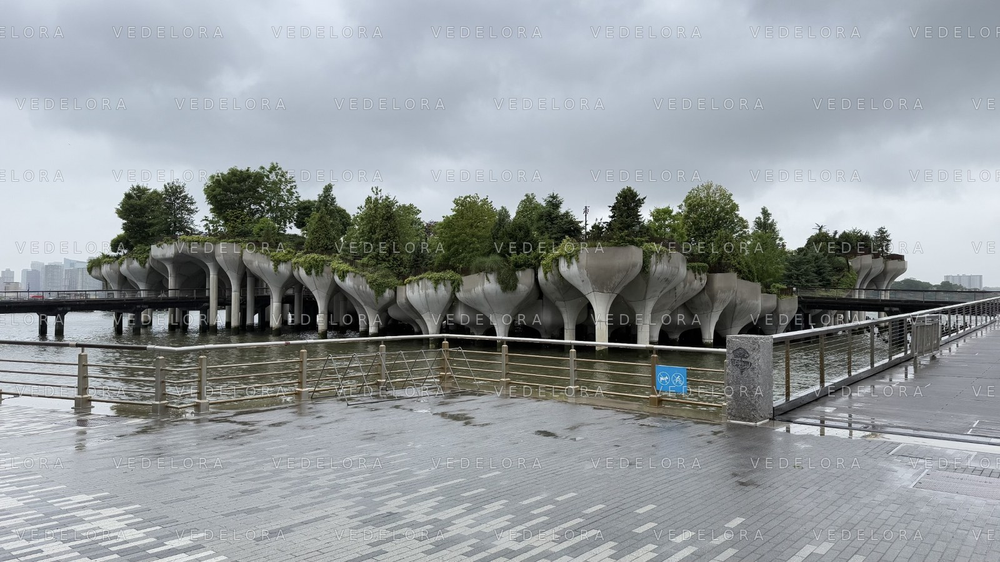

ARCHITECTURAL PHOTOGRAPHY · NEW YORK CITY
Little Island — Architecture on the Hudson

ABOUT THIS IMAGE
Architecture, landscape, atmosphere.
Photographed along the Hudson River on an overcast day, this image captures the sculptural concrete supports of Little Island and the meeting of architecture, greenery and the New York waterfront.